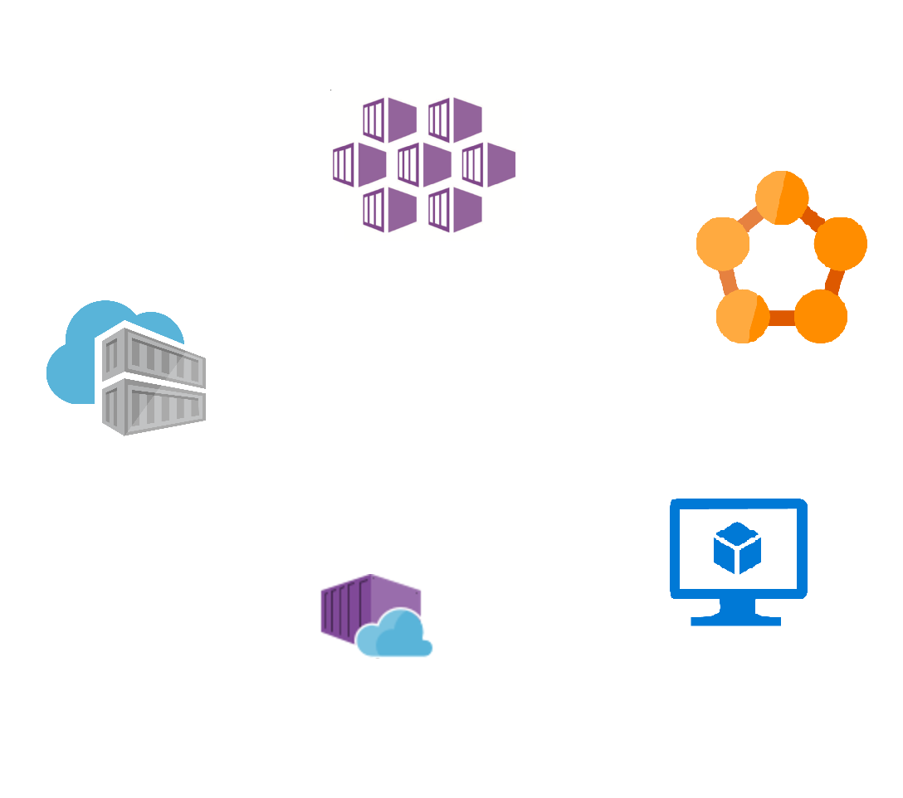
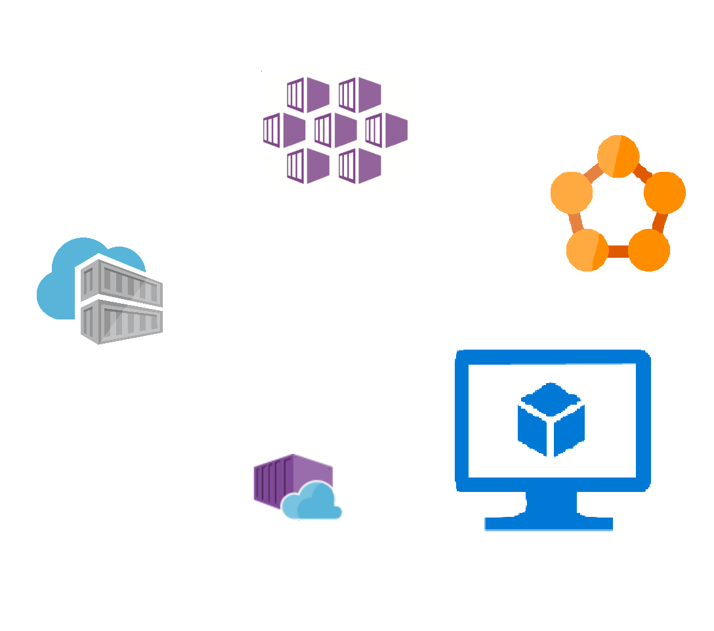
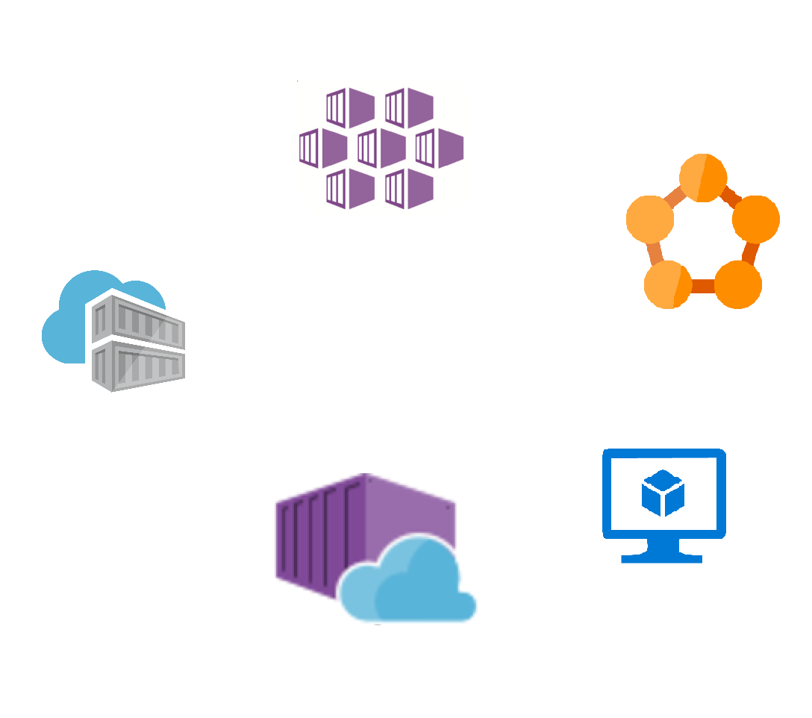

Azure Container Instances

Kristian Johannessen
Lyntalekveld om DevOps og Sky
Containere i Azure
Containere i Azure

Containere i Azure

Containere i Azure

Containere i Azure
Containere i Azure
Azure Container Instances
- Ingen VM'er
- Ingen clusteroppsett
- Bring your own container
- Custom cpu
- Custom minne
- Betal pr sekund
⚡ Serverless ⚡
⚡ Demo-time ⚡
Container group

Filvolum
Orkestrering
- Håndterer enkeltcontainere
- Tradisjonelle orkestreringsløsninger på toppen
- Kubernetes: https://github.com/Azure/aci-connector-k8s
Fremtiden
- Første av sitt slag
- "Uendelig skalering"
- Kontroll på kostnader
- Scheduled tasks
- Byggagenter